前言
这个 Quiet 主题的布局个人是很喜欢的，风格简洁且小众。可惜它相比于主流的 NexT 、Butterfly 和 Fluid 等的功能还是太少了😇，于是决定魔改一下它。
这篇博客记录了给这个主题添加的各种功能。
正文
站内搜索
博客里 bb 了太多东西，考虑加一个站内搜索方便检索一下之前的文章。
hexo-generator-search
安装完 hexo-generator-search 插件后，hexo g 就会在 public 文件夹下创建 ./search.xml，这会把所有博客的文章内容整合进去。
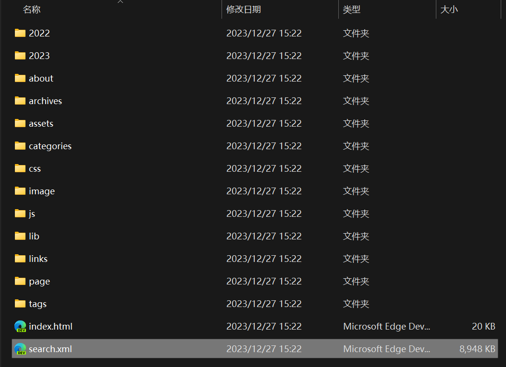
后端（算是吧）
接下来就是靠 JS 如何检索文章。Butterfly 已经有自带检索文章的功能了，研究了一会儿没研究出怎么把代码偷下来……找到了一个从零配置搜索功能的文章：
核心就是下面这个 search.js 了，魔改一下：
1 2 3 4 5 6 7 8 9 10 11 12 13 14 15 16 17 18 19 20 21 22 23 24 25 26 27 28 29 30 31 32 33 34 35 36 37 38 39 40 41 42 43 44 45 46 47 48 49 50 51 52 53 54 55 56 57 58 59 60 61 62 63 64 65 66 67 68 69 70 71 72 73 74 75 76 77 78 79 80 81 82 83 84 85 86 87 88 89 90 91 92 93 94 95 96 97 98 99 100 101 102 103 104 105 106 107 108 109 110 111 112 113 114 115 116 117 118 119 120 121 122 var searchFunc = function (path, search_id, content_id, match_count_id ) {ajax ({url : path,dataType : "xml" ,success : function (xmlResponse ) {var datas = $("entry" , xmlResponse).map (function (return {title : $("title" , this ).text (),content : $("content" , this ).text (),url : $("url" , this ).text ()get ();var $input = document .getElementById (search_id);var $resultContent = document .getElementById (content_id);addEventListener ('input' , function (var str = '<ul class=\"search-result-list\">' ;var keywords = this .value .trim ().split (/[\s\-]+/ ); innerHTML = "" ;if (this .value .trim ().length <= 0 ) {document .getElementById (match_count_id).textContent = "" ;return ;forEach (function (data ) {var isMatch = true ;if (!data.title || data.title .trim () === '' ) {title = "Untitled" ;var data_title = data.title .trim ();var data_content = data.content .trim ().replace (/<[^>]+>/g , "" );var data_url = data.url ;var index_title = -1 ;var index_content = -1 ;var first_occur = -1 ;if (data_content !== '' ) {forEach (function (keyword, i ) {indexOf (keyword);indexOf (keyword);if (index_title < 0 && index_content < 0 ) {false ;else {if (index_content < 0 ) {0 ;if (i == 0 ) {else {false ;if (isMatch) {"<li><a href='" + data_url +"' class='search-result-title'>" + data_title + "</a>" ;var content = data.content .trim ().replace (/<[^>]+>/g , "" );if (first_occur >= 0 ) {var start = first_occur - 20 ;var end = first_occur + 80 ;if (start < 0 ) {0 ;if (start == 0 ) {100 ;if (end > content.length ) {length ;var match_content = content.substr (start, end);forEach (function (keyword ) {var regS = new RegExp (keyword, "gi" );replace (regS,"<em class=\"search-keyword\">" +"</em>" );"<p class=\"search-result\">" + match_content +"...</p>" "</li>" ;"</ul>" ;if (str.indexOf ('<li>' ) === -1 ) {document .getElementById (match_count_id).textContent = "" ;return $resultContent.innerHTML = "<ul><span class='local-search-empty'>没有找到内容，更换下搜索词试试吧~<span></ul>" ;else document .getElementById (match_count_id).innerHTML = "匹配到 <b><font size=\"5px\"><font color=\"#424242\">" + str.match (/<li>/g ).length + "</font></font></b> 个结果。" ;innerHTML = str;
大致意思就是读取输入框 search_id 里的内容，从 path（./search.xml）检索内容，将检索到的内容和计数分别以列表形式追加到 content_id 和 match_count_id 中。
前端
search.ejs
OK，后端就是这样，接下来写前端 search.ejs：
1 2 3 4 5 6 7 8 9 10 11 12 13 14 15 16 17 18 19 20 21 <div class="page-header">
search.css
search.css 设计一下布局：
1 2 3 4 5 6 7 8 9 10 11 12 13 14 15 16 17 18 19 20 21 22 23 24 25 26 27 28 29 30 31 32 33 34 35 36 37 38 39 40 41 42 43 44 45 46 47 48 49 50 51 52 53 54 55 56 57 58 59 60 61 62 63 64 65 66 67 68 69 70 71 72 73 74 75 76 77 78 79 80 81 82 83 84 85 86 87 88 89 90 91 92 93 94 95 96 97 98 99 100 101 102 103 104 105 106 107 108 109 110 111 112 113 114 115 116 117 118 119 120 121 122 123 124 125 126 127 128 129 130 131 132 133 134 135 136 137 138 139 140 141 142 143 144 145 146 147 148 149 150 151 152 153 154 155 156 157 158 159 160 161 162 163 164 165 .page-header {display : flex;align-items : center; .local-search {position : relative;text-align : left;display : grid;.local-search-input-box {display : flex; height : 24px ;margin : 20px 10px 0 10px ;padding : 4px 12px ;border-radius : 20px ;border : 2px solid #898fa0 ;color : #666 ;font-size : 14px ;align-items : center; .local-search-input-cls {width : 100% ;color : #12183A ;font-size : 16px ;padding-left : 0.6em ;border : none;outline :none;a .search-result-title {display : flow !important ;width : auto !important ;height : auto !important ;margin-left : 0 !important ;.local-search-result-cls {overflow-y : overlay;max-height : calc (80vh - 200px );width : 100% ;margin : 20px 0 ;@media screen and (max-width : 800px ) {.local-search-result-cls {margin : 20px 10px ;.local-search-empty {color : #888 ;line-height : 44px ;text-align : center;display : block;font-size : 18px ;font-weight : 400 ;.local-search-result-cls ul {min-width : 400px ;max-width : 900px ;max-height : 600px ;min-height : 0 ;height : auto;margin : 15px 5px 15px 20px ;padding-right : 30px ;@media screen and (max-width : 800px ) {.local-search-result-cls ul {min-width : auto;max-width : max-content;max-height : 70vh ;min-height : auto;padding : 0 10px 10px 10px 10px ;.local-search-result-cls ul li {text-align : left;border-bottom : 1px solid #bdb7b7 ;padding-bottom : 10px ;margin-bottom : 20px ;line-height : 30px ;font-weight : 400 ;.local-search-result-cls ul li :last-child {border-bottom : none;margin-bottom : 0 ;.local-search-result-cls ul li a {margin-top : 20px ;font-size : 18px ;text-decoration : none;transition : all .3s ;font-weight : bold;color : #12183A ;.local-search-result-cls ul li a :hover {text-decoration :underline;.local-search-result-cls ul li p {margin-top : 10px ;font-size : 14px ;max-height : 124px ;overflow : hidden;.local-search-result-cls ul li em .search-keyword {color : #00F ;font-weight :bold;font-style : normal;.search_icon {width : 14px ;height : 14px ;.search-dialog {display : block;padding : 64px 80px 20px 80px ;width : 100% ;align-items : center; margin : 0 0 20px ;@media screen and (max-width : 800px ) {.search-dialog {box-sizing : border-box;top : 0 ;left : 0 ;margin : 0 ;width : 100% ;height : 100% ;border-radius : 0 ;padding : 50px 15px 20px 15px ;.local-search-match-count {padding : 20px 20px 0 20px ;color : #12183A ;.search-dialog h2 {display : inline-block;width : 100% ;margin-bottom : 20px ;color : #424242 ;font-size : 1.7rem ;.search-close-button :hover {filter : brightness (120% );#local-search .search-dialog .local-search-box {margin : 0 auto;max-width : 100% ;width : 100% ;.custom-hr , .search-dialog hr {position : relative;margin : 0 auto;border : 1px dashed #bdb7b7 ;width : calc (100% - 4px );input [type="search" ] ::-webkit-search-cancel-button {appearance : none;height : 10px ;width : 10px ;background : url (/images/close.png ) no-repeat;background-size : contain;input [type="search" ] ::-webkit-search-cancel-button:hover {filter : brightness (120% );
部署
index.less 导入 css：
1 @import "./plugin/search.css" ;
我把这个搜索模块放到了统计页面下 grouping 前，看起来还不错，然后设置一个开关控制这个功能是否启用。
1 2 3 <% if(theme.search && is_archive()) { %>
演示
本地是秒出结果的，部署上去的话会比较卡，乱输的话还会崩溃 emmm 手机试了下没加载成功……果然还是 bb 太多了。
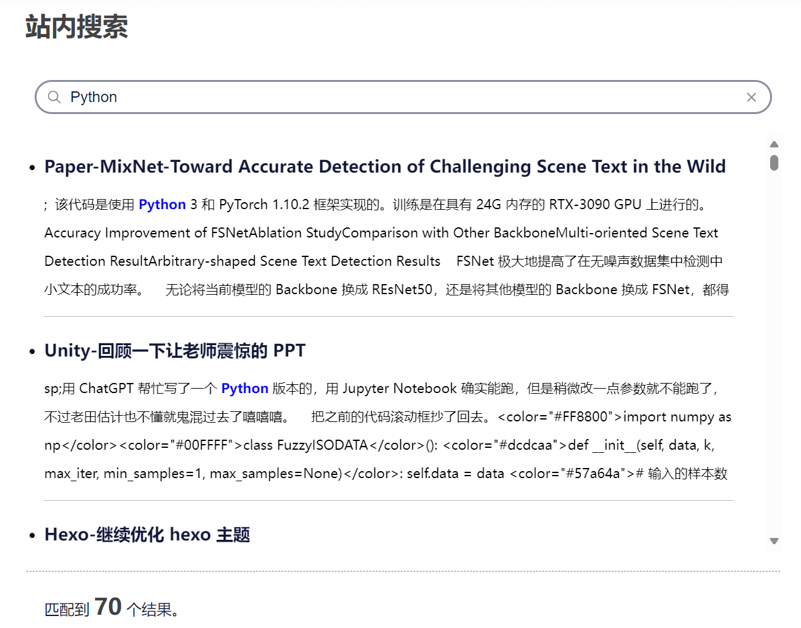
翻页功能改进
这个主题只能提供上一页和下一页两个翻页功能，一页一页地翻效率太低了，不适合这个目前 bb 了 28 页的的博客，修改一下。
方法论
hexo 渲染博客会根据文章数量进行分页。查一下 API：变量 | Hexo ：
变量
描述
类型
page.per_page每页显示的文章数量
number
page.total总页数
number
page.current目前页数
number
page.current_url目前分页的网址
string
page.posts本页文章 (Data Model )
object
page.prev上一页的页数。如果此页是第一页的话则为 0。
number
page.prev_link上一页的网址。如果此页是第一页的话则为 ''。
string
page.next下一页的页数。如果此页是最后一页的话则为 0。
number
page.next_link下一页的网址。如果此页是最后一页的话则为 ''。
string
page.path当前页面的路径（不含根目录）。我们通常在主题中使用 url_for(page.path)。
string
对于首页（index），有 page.prev_link 和 page.next_link 两个变量可以使用，所以实现上一页和下一页的功能是比较容易的。
但要是想翻到其它页，得使用其它变量了。
观察网站的网址。除了第 1 页的网址是 /，其他都是 /page/X。
所以根据 page.current 和 page.total 足以写出翻页逻辑了，设置一个变量 pagination 控制左右显示的页数。
代码
home.ejs
修改 home.ejs：
1 2 3 4 5 6 7 8 9 10 11 12 13 14 15 16 17 18 19 20 21 22 23 24 25 26 27 28 29 30 31 32 33 34 35 36 37 38 39 40 41 42 43 44 45 46 47 48 49 50 51 52 53 54 55 56 57 58 59 60 61 62 63 64 65 66 67 68 <div class="change-page">
home.less
再调整 home.less：
1 2 3 4 5 6 7 8 9 10 11 12 13 14 15 16 17 18 19 20 21 22 23 24 25 26 27 28 29 30 31 32 33 34 35 .change-page {display : inline;color : #FFF ;.box {background : #006AFF ;width : 40px ;height : 40px ;line-height : 40px ;border-radius : 10px ;margin : 8px ;box-shadow : 0 20px 40px 0 rgba (50 ,50 ,50 ,0.1 );.ellipsis .box {background : #fff ;color : #898FA0 ;.page {display : inline-block;a {color : @textColorTheme;text-decoration : none;.box {background : #fff ;color : #898FA0 ;.box :hover {margin-top : -15px ;cursor : pointer;
演示
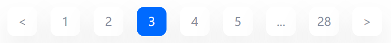
现在翻页不仅可以翻到上一页和下一页，还可以翻到首页、尾页以及周围的页数。如果周围的页数与首页和尾页不连续，添加省略号。
首页显示 description
在主页文章的 description 以更好地展示这篇文章在大致在 bb 什么。
这对加密的文档，post.excerpt 会一律显示“这里有东西被加密了，需要输入密码查看哦。”，大概是 hexo-blog-encrypt 把 post.excerpt 给强行替换了，我想目前的解决的办法是换一个变量名称？所以按 Buteerfly 的样式将关键词改成了 description。
代码
home.ejs
home.ejs 中找到 post-block-content-info，加上显示 post.description 的代码：
1 2 3 <span class="post-block-content-info-description">
home.less
home.less 修改样式：
1 2 3 4 5 6 7 8 9 .post-card-description {padding : 10px 16px ;text-align : right;flex-grow : 1 ;font-size : 14px ;font-weight : 500 ;line-height : 36px ;color : #999 ;
演示
最终演示：
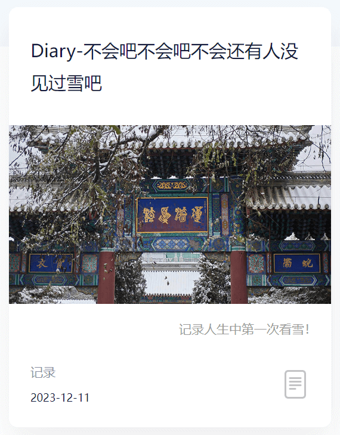
代码块辅助
对于又臭又长的代码，设计复制代码按钮、显示代码语言和隐藏代码块三个实用功能。（借鉴自 Butterfly）
方法论
这个主题在渲染 markdown 的代码块语句时，会把它渲染成下图所示的形式：
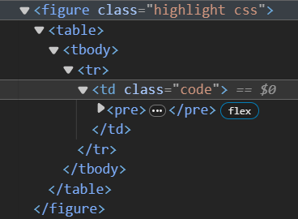
代码
highlight_tools.ejs 把 <pre> 元素获取了，再把相关参数一并送给 highlight_tools.js：
感觉这么写代码有点不规范，先这样吧！
1 2 3 4 5 <%- js('js/widget/highlight_tools.js') %>
1 2 3 4 5 6 7 8 9 10 11 function createHighlightTools (codeBlocks, copyIcon, closeCodeBlockIcon, highlightShrink, HighlightHeightLimit ) {forEach (function (codeBlock ) {if (!codeBlock.querySelector ('code' ))return ;var container = createContainer (codeBlock);createCopyButton (container, codeBlock, copyIcon);createCodeLangText (container, codeBlock);createCloseCodeBlockButton (container, codeBlock, closeCodeBlockIcon, highlightShrink);setHighlightHeightLimit (codeBlock, HighlightHeightLimit );
先找找这个 <pre> 有没有 <code> 这个子元素，防止误判。
createContainer() 给代码块顶端包一层，用于放置 UI。
然后依次实现三个功能：
createCopyButton()：创建复制按钮createCodeLangText()：代码语言提示文本createCloseCodeBlockButton()：关闭代码块功能
function createContainer()
1 2 3 4 5 6 7 8 function createContainer (codeBlock ) {var container = document .createElement ('div' );className = 'hightlight-tools' ;parentNode .insertBefore (container, codeBlock);return container;
这样，在代码块上方就会多一个 <div class="highlight_tools">。
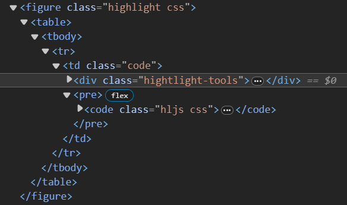
之前找的大都要我去引用一个叫 clipboard.js 的东西，结果下载下来引用报错，找了一个不需要插件的代码：
1 2 3 4 5 6 7 8 9 10 11 12 13 14 15 16 17 18 19 20 21 22 23 24 25 26 27 28 29 30 31 32 33 34 35 36 37 38 39 function createCopyButton (container, codeBlock, icon ) {var button = document .createElement ('button' );className = 'copy-button' ;type = 'button' ;title = 'copy-button' ;style .backgroundImage = 'url("' + icon + '")' ;appendChild (button);var span = document .createElement ('span' );textContent = "已复制" ;className = 'copy-notice' ;appendChild (span);addEventListener ('click' , function (var code = codeBlock.innerText ;var textarea = document .createElement ('textarea' );value = code;document .body .appendChild (textarea);select ();document .execCommand ('copy' );document .body .removeChild (textarea);style .opacity = 1 ;setTimeout (function (style .opacity = 0 ;1000 );
原文中获取代码内容的代码为 var code = codeBlock.textContent; 这么做会舍弃换行符，应改为 var code = codeBlock.innerText;。
同时加上”已复制“的提示文本。
function createCodeLangText()
1 2 3 4 5 6 7 8 9 10 11 12 function createCodeLangText (container, codeBlock ) {var span = document .createElement ('span' );textContent = codeBlock.querySelector ('.hljs' ).classList .value .replace ('hljs ' , '' ).toUpperCase (); if (span.textContent === 'EBNF' )textContent = '' ;className = 'code-lang' ;appendChild (span);
获取 hljs 类中另一个类的名称，即为代码语言。如果 markdown 中没有设置代码语言，会渲染成 ebnf 类，把它替换为空。
1 2 3 4 5 6 7 8 9 10 11 12 13 14 15 16 17 18 19 20 21 22 23 24 25 26 function createCloseCodeBlockButton (container, codeBlock, icon, highlight_shrink )var button = document .createElement ('button' );className = 'close-code-block-button' ;type = 'button' ;title = 'close-code-block-button' ;style .backgroundImage = 'url("' + icon + '")' ;appendChild (button);if (Boolean (highlight_shrink))var hljs = codeBlock.querySelector ('.hljs' );style .transform = "rotate(-90deg)" ;classList .add ("closed" );addEventListener ('click' , function (var hljs = codeBlock.querySelector ('.hljs' );if (!hljs.classList .contains ('closed' )) {style .transform = "rotate(-90deg)" ;classList .add ("closed" );else {style .transform = "rotate(0deg)" ;classList .remove ("closed" );
获取 hljs类，给它加一个 closed类，剩余的逻辑交给 css 吧。
文章新增参数 highlight_shrink，如果为 true，默认代码块就是关闭的。
function setHighlightHeightLimit()
1 2 3 4 5 6 7 8 9 function setHighlightHeightLimit (codeBlock, HighlightHeightLimit )if (HighlightHeightLimit != "" )var hljs = codeBlock.querySelector ('.hljs' );style .maxHeight = HighlightHeightLimit ;
控制代码块最大长度。这个值由 page.highlight_height_limit 控制。
1 2 3 4 5 6 7 8 9 10 11 12 13 14 15 16 17 18 19 20 21 22 23 24 25 26 27 28 29 30 31 32 33 34 35 36 37 38 39 40 41 42 43 44 45 46 47 48 49 50 51 52 53 54 55 56 57 58 59 60 61 62 63 64 .hightlight-tools {background : #e6ebf1 ;position : relative;height : 32px ;.copy-notice {font-weight : 500 ;position : absolute;right : 30px ;font-size : 14px ;opacity : 0 ;transition : opacity 0.4s ;color : #b3b3b3 ;select : none; select : none; select : none; select : none;.copy-button {position : absolute;width : 18px ;height : 18px ;right : 6px ;border : none;background-color : rgba (0 , 0 , 0 , 0 );background-size : cover;top : 50% ;transform : translateY (-50% );.copy-button :hover filter : brightness (120% );.code-lang {font-weight : bold;position : absolute;left : 30px ;font-size : 16px ;color : #b3b3b3 ;.close-code-block-button {position : absolute;width : 16px ;height : 16px ;bottom : 8px ;left : 6px ;border : none;background-color : rgba (0 , 0 , 0 , 0 );background-size : cover;transition : transform 0.4s ;.closed {height : 0 ;padding : 0 !important ;overflow-y : hidden;
右边栏及目录
这个主题自带 toc 功能，用的是 hexo 自带的 toc 功能，但是啥布局也没写……就一直没用。
之前的目录一直用的是 hexo-toc 插件，但是这只能放到文章的一个大片段里，不能随着阅读跟随，体验不太好。
决定重新设计一个目录架构，放到文章右侧并实时跟随。
hexo-toc 插件跟 自带的 toc 冲突了，把它卸了。
方法论
参考默认的 toc：辅助函数（Helpers）| Hexo
使用 <%- toc(page.content,{list_number:false}) %> 语句就会一阵输出目录的内容：
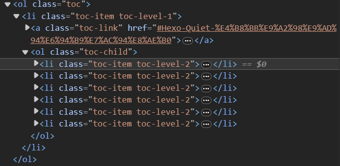
对于 hexo 自带的 toc 功能，它会给所有标题添加 ID，ID 内容为标题的内容，同时生成连接 #XXX，使其可以跳转到目标位置。
对于放到网址会有歧义的字符，会用 - 替代（hexo-toc 直接删掉这个字符，我想这是这个插件跟默认的 toc 冲突的原因）。
对于重名的标题，会在后面追加 -X 作为区分。
但是这个自带的 toc 似乎有 bug，某些结构的目录并不会把所有的 <li> 都放在 <ol class="toc-child"></ol> 中，而且碰 hexo-blog-encrypt 就废了，所以我打算根据它默认生成的目录结构重写一份生成目录的逻辑。
代码
rightside.ejs
暂时把主题原来的 goTop.ejs 取代了换成侧边栏：rightside.ejs：
hidden 会让目录及其按钮隐藏起来，这是加密插件的存在而设计。toc.js 控制着目录生成的逻辑。
1 2 3 4 5 6 7 8 9 10 11 12 13 14 15 16 17 18 19 20 21 22 23 24 25 26 27 28 29 30 31 32 33 34 35 36 37 38 39 40 41 42 43 44 45 46 47 48 49 50 51 52 53 <%- js('js/goto_position.js') %>
goto_position.js
魔改原来的 goTop.js 使其可以也滚动到底部：
1 2 3 4 5 6 7 8 9 10 11 12 13 14 15 16 17 18 19 20 21 22 23 24 25 26 27 28 29 30 31 32 33 34 35 (function ($ ) {fn .gotoPosition = function (opt ) {var ele = this ;var win = $(window );var doc = $("html,body" );var defaultOpt = {speed : 500 ,iconSpeed : 200 ,animationShow : {opacity : "1" ,animationHide : {opacity : "0" ,var options = $.extend (defaultOpt, opt);click (function (var targetOffset = 0 ;if (opt && opt.target ) {if (opt.target === "top" ) {0 ; else if (opt.target === "bottom" ) {document ).height () - win.height (); animate (scrollTop : targetOffset, speed
toc.js
function initToc()
初始化目录，如果文章没有被加密（类名为 hbe 和 hbe-content 的元素）不存在，则移除目录的 hidden 类。
模仿 Butterfly，借助 localStorage 判断默认状态下是否显示目录。
1 2 3 4 5 6 7 8 9 10 11 12 13 14 15 16 17 18 19 20 21 22 23 24 function initToc (if ($('.hbe.hbe-content' ).length > 0 ) {'.rightside-button, .post-toc' ).addClass ('hidden' );return ;else {'.rightside-button' ).removeClass ('hidden' );'.post-toc' ).removeClass ('hidden' );var value = localStorage .getItem ('aside-status' );if (value === null ) { localStorage .setItem ('aside-status' , "true" );true ;if (value === "true" ) {"#post-toc" ).addClass ("show-toc" );"#content" ).addClass ("show-toc" );createToc ();
createToc()
创建目录：
往 <ol class="toc-child"></ol> 里不断追加元素
点击目录中的元素会平滑跳转到对应的位置。
1 2 3 4 5 6 7 8 9 10 11 12 13 14 15 16 17 18 19 20 21 22 23 24 25 26 27 28 29 30 31 32 33 34 35 36 37 38 39 40 41 42 43 44 45 46 47 48 49 50 51 52 53 54 55 56 57 58 function createToc (var toc = $('.toc' );empty ();var headings = $('#content' ).find ('h1, h2, h3, h4, h5, h6' );var currentLevel = 1 ;var currentList = toc;for (var i = 0 ; i < headings.length ; i++) {var heading = $(headings[i]);if (/^[0-9]/ .test (heading.attr ('id' ))) {attr ('id' , '_' + heading.attr ('id' ));if (!heading.find ('a' ).length ) continue ;var level = parseInt (heading.prop ('tagName' ).charAt (1 ));if (level > currentLevel) {for (var j = currentLevel + 1 ; j <= level; j++) {var newOl = $('<ol>' ).addClass ('toc-child' );var newLi = $('<li>' ).addClass ('toc-item toc-level-level1-' + j);append (newLi);append (newOl);else if (level < currentLevel) {for (var j = level; j < currentLevel; j++) {parent ().parent ();var li = $('<li>' ).addClass ('toc-item toc-level-level-' + level);var hrefValue = heading.html ().match (/href="([^"]+)"/ ) ? heading.html ().match (/href="([^"]+)"/ )[1 ] : '' ;if (!isNaN (parseInt (hrefValue.charAt (1 )))) {slice (0 , 1 ) + "_" + hrefValue.slice (1 );var titleValue = heading.html ().match (/title="([^"]+)"/ ) ? heading.html ().match (/title="([^"]+)"/ )[1 ] : '' ;html ('<a class="toc-link" href="' + hrefValue + '"><span class="toc-text">' + titleValue + '</span></a>' );var a = li.find ("a" );on ("click" , function (event ) {preventDefault ();var element = $($(this ).attr ("href" ));var rect = element[0 ].getBoundingClientRect ();var topOffset = rect.top + window .scrollY - 90 ; window .scrollTo ({top : topOffset,behavior : "smooth" append (li);
$(“#js-toc”).click()
点击按钮，控制目录是否展示。
1 2 3 4 5 6 7 8 9 10 11 12 13 $("#js-toc" ).click (function (var postToc = $("#post-toc" );var content = $("#content" );if (!postToc.hasClass ("show-toc" )) {localStorage .setItem ('aside-status' , true );addClass ("show-toc" );addClass ("show-toc" );else {removeClass ("show-toc" );removeClass ("show-toc" );localStorage .setItem ('aside-status' , false );
用于控制目录是否显示，送它一个 show-toc 类，剩下的交给 less。
function getTopHeadingId()
获取当前网页最顶端标题的 id，抄着下面的代码，-110 是考虑到了主题顶端栏的存在：
1 2 3 4 5 6 7 8 9 10 11 12 13 14 function getTopHeadingId (const headings = document .querySelector ('#content' ).querySelectorAll ('h1, h2, h3, h4, h5, h6' );let topHeadingId = null ;let minDistanceFromTop = Infinity ;for (const heading of headings) {const boundingRect = heading.getBoundingClientRect ();const distanceFromTop = Math .abs (boundingRect.y - 90 );if (distanceFromTop < minDistanceFromTop) {id ;return topHeadingId;
document.addEventListener()
目录会根据当前所在位置高亮标题，送它一个 active 类，剩下的交给 less。
当当前标题不在显示范围时，再给它强行滚动到可见范围。
1 2 3 4 5 6 7 8 9 10 11 12 13 14 15 16 17 18 19 20 21 document .addEventListener ("scroll" , function (event ) {const tocLinks = document .querySelectorAll ('a.toc-link' );const topHeadingId = getTopHeadingId ();forEach (link =>var href = decodeURIComponent (link.getAttribute ('href' )).replace (/^#/ , '' );;if (href == topHeadingId) {if (!link.classList .contains ('active' )) {classList .add ("active" );var toc = document .querySelector (".toc" );var activeItem = toc.querySelector (".active" );if (activeItem) {scrollTo ({top : activeItem.offsetTop - 100 else {classList .remove ("active" );3000 );
toc.less
继续模仿 Butterfly 的布局，展示目录的时候，主页面会向左移动，同时写了移动端的适配。
1 2 3 4 5 6 7 8 9 10 11 12 13 14 15 16 17 18 19 20 21 22 23 24 25 26 27 28 29 30 31 32 33 34 35 36 37 38 39 40 41 42 43 44 45 46 47 48 49 50 51 52 53 54 55 56 57 58 59 60 61 62 63 64 65 66 67 68 69 70 71 72 73 74 75 76 77 78 79 80 81 82 83 84 85 86 87 88 89 90 91 92 93 94 95 96 97 98 99 100 101 102 103 104 105 106 107 108 109 110 111 112 113 114 115 116 117 118 119 120 121 122 123 124 125 126 127 128 .post-toc {border-radius : 10px ;background : rgba (255 , 255 , 255 , 0.9 );box-shadow : 0 0 40px 0 rgba (50 , 50 , 50 , 0.08 );padding : 10px 5px 10px 5px ;border : 1px solid rgba (18 , 24 , 58 , 0.06 );.post-toc-title {margin-left : 15px ;font-weight : bold;color : #424242 ;font-size : 18px ;.toc {margin : 12px 5px 5px 5px ;display : block;overflow : auto;.toc ::-webkit-scrollbar {width : 5px ;height : 5px ;.toc ::-webkit-scrollbar-thumb {background-color : #AAA ; border-radius : 10px ;a {text-decoration : none;ol {display : inline;list-style-type : none;a .active .toc-link {.toc-text {color : #FFF ;.toc-link {margin-right : 5px ;padding-top : 5px ;padding-bottom : 5px ;display : block;li {margin-left : 10px ;background : none;.toc-text {padding : 0 5px ;color : #898fa0 ;.active {span {padding : 4px 10px ;border-radius : 8px ;background : rgba (0 , 106 , 255 , 0.8 );span :hover {color : #4183c4 ;@media screen and (min-width : 1100px ) {.post-toc {z-index : 2 ;position : fixed;bottom : 200px ;width : 260px ;right : -250px ;transition : right 0.5s ease-out;.toc {max-height : 40vh ;.post-toc .show-toc {right : min (30px , 2vw );.post-toc .show-toc .hidden {right : -250px ;.post-content .show-toc {max-width : min (960px , 80vw );transform : translateX (calc (-0.1 * min (960px , 80vw )));@media screen and (max-width : 1100px ) {.post-toc {z-index : 2 ;position : fixed;bottom : -30vh ;min-width : 40vw ;max-width : calc (75vw - 10px );right : min (70px , calc (10vw + 30px ));margin-left : 20px ;transition : bottom 0.5s ease-out;.toc {max-height : 16vh ;.post-toc .show-toc {bottom : 20px ;.post-toc .show-toc .hidden {right : -30vh ;
dispatch_event.js
新版的 hexo-blog-encrypt 提供了解密后的回调函数，更新这个插件：
1 npm update hexo-blog-encrypt
After Decrypt Event
Thanks to @f-dong , we now will trigger a event named hexo-blog-decrypt, so you can add a call back to listen to that event.
1 2 3 var event = new Event ('hexo-blog-decrypt' );window .dispatchEvent (event);
在解密后重新初始化目录：
1 2 3 4 5 6 7 8 9 10 11 12 var event = new Event ('hexo-blog-decrypt' );window .dispatchEvent (event);function handleHexoBlogDecryptEvent (console .log ("文章解密成功！" );initToc ();window .addEventListener ('hexo-blog-decrypt' , handleHexoBlogDecryptEvent);
演示
电脑端：
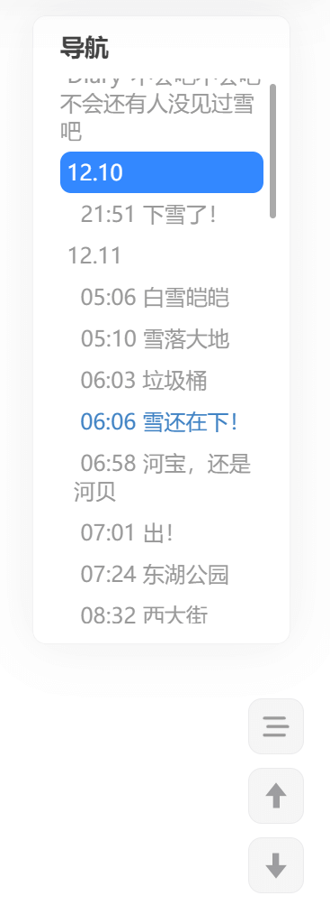
移动端：
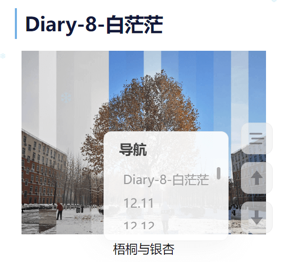
标题图超框
这是自己突发奇想原创的一个功能，增加一个变量控制这个功能让其看上去没有那么屎山。
代码
home.ejs
修改 home.ejs，增加 post.cover_style 变量允许文章头部的 yaml 控制标题图的 style：
1 2 3 <div class="img-container">
home.less
对应 less：
1 2 3 4 5 6 7 8 9 10 11 12 .img-container {width : 100% ;height : 200px ;background : @headerBackgroundColor ;position : relative;img {width : 100% ;height : 100% ;object-fit : cover;display : block;
超框图制作
用 PS 修一个超框图，就决定是你了，癫狂公爵西塔尔！疯子也要有教养。
我一般的 cover 都是设成 800px * 450px 的，这个封面图设置为 800px * 738px，用 PS 保证“框”的高度为 450px，“框“的顶部距离画面顶部 150px。
cover_style
文章自定义 cover_style：
1 cover_style: "height: 164%; position: absolute; top: 0; left: 0; transform: translateY(-20.3%);"
覆盖之前的封面图样式：
height: 164%;：由 738 / 450 = 1.64 得到。position: absolute; top: 0; left: 0; object-fit: contain; 超框的处理。transform: translateY(-20.3%);" 向上移 20.3%，因为 150 / 738 ≈ 20.3%。
演示
帅呆了！
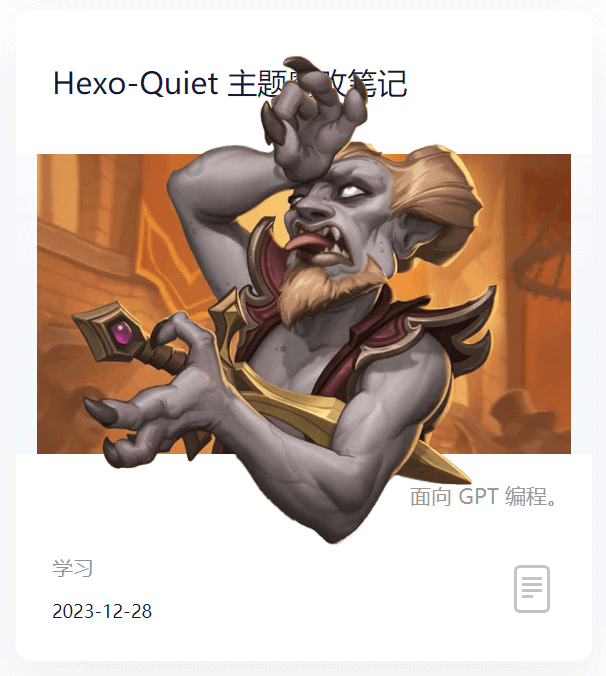
置顶图标
对于含有 top 属性的文章，增加一个置顶图标。
代码
home.ejs
1 2 3 <% if(post.top){ %>
home.less
对应的：
1 2 3 4 5 .stiky {width : 18px ;height : 18px ;margin : 8px 6px 0 0 ;
演示
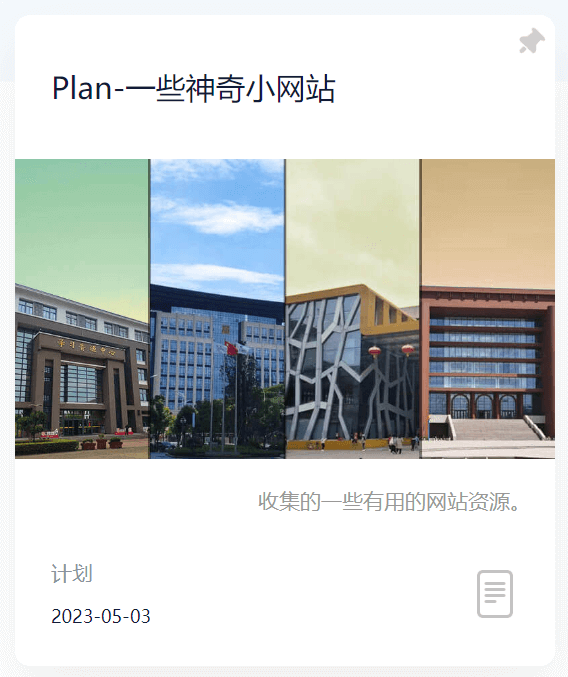
加密图标
首页展示这个文章是否被加密，防止白点一趟。
代码
home.ejs
根据 post.password 的值是否为空判断这个文章是否被加密。
1 <img src="<%- post.password ? theme.icon.locked : theme.icon.normal %>" class="meat-type" alt="Icon">
演示
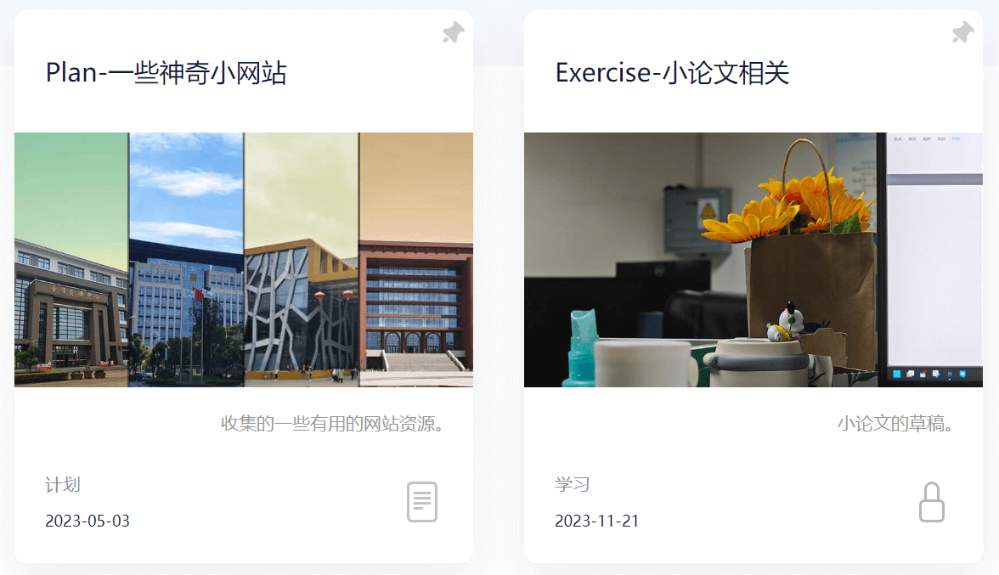
面包屑导航栏
设计的嵌套页面太深了，设计一个面包屑导航栏防止迷路。
添加一个 <ul> 以放置导航栏。
1 2 3 4 5 6 <div class="h-left">
底部调用 js，并传参（从 yaml 传参给 JS 还蛮复杂的，要花点脑经）：
1 2 3 4 5 6 7 8 9 10 11 12 13 14 <%- js('js/breadcrumb.js') %>
breadcrumb.js
设计两种面包屑导航栏：
customBreadcrumb 简单地根据页面网址生成导航栏。categoriesBreadcrumb 对于常规的推文，根据它的类别生成导航栏。
function customBreadcrumb()
1 2 3 4 5 6 7 8 9 10 11 12 13 14 15 16 17 18 19 20 21 22 23 24 25 26 27 28 29 30 31 32 33 34 35 36 37 38 39 40 41 42 43 44 45 46 47 48 49 50 51 function customBreadcrumb (breadcrumb, menus_title ) {var path = window .location .pathname ;var levels = path.split ('/' );shift (); pop (); for (var i = 0 ; i < levels.length ; i++) {var levelLink = '/' ;for (var j = 0 ; j <= i; j++) {'/' ;var levelName = decodeURIComponent (levels[i]);if (i === 0 ) {var title_obj = menus_title.find (function (item ) {return item[levelName] !== undefined ;var title_value = title_obj ? title_obj[levelName] : null ;if (!title_value) {return ; for (var i = 0 ; i < levels.length ; i++) {var levelLink = '/' ;for (var j = 0 ; j <= i; j++) {'/' ;var levelName = decodeURIComponent (levels[i]);var li = document .createElement ('li' );var a = document .createElement ('a' );if (i === 0 ) {textContent = title_value;else {textContent = levelName;if (i == levels.length - 1 ) {classList .add ("last" );href = levelLink;appendChild (a);appendChild (li);
function categoriesBreadcrumb()
1 2 3 4 5 6 7 8 9 10 11 12 13 14 15 16 17 18 19 function categoriesBreadcrumb (breadcrumb, categories, categoriesLink ) {var li = document .createElement ('li' );var a = document .createElement ('a' );textContent = categories;href = categoriesLink;appendChild (a);appendChild (li);document .createElement ('li' );document .createElement ('a' );textContent = "文章" ;href = window .location .href ;classList .add ("last" );appendChild (a);appendChild (li);
在 hearer.less 的相应位置设置样式：
1 2 3 4 5 6 7 8 9 10 11 12 13 14 15 16 17 18 19 20 21 22 23 24 25 26 27 28 29 .breadcrumb {margin-left : 5px ;display : flex;list-style : none;padding : 0 ;a {color : #898fa0 ;text-decoration : none;.last {color : #12183A ;.dot {display : inline-block;width : 5px ;height : 5px ;border-radius : 50% ;background : #006AFF ;position : relative;top : -12px ;left : 2px ;.breadcrumb li ::before {color : #898fa0 ;content : ">" ;margin : 0 5px ;
修改一下对于手机端的适配：
1 2 3 4 5 6 7 @media screen and (max-width :660px ) {.header {.header-top {.h-left {flex-grow : 3 ;
效果
customBreadcrumb
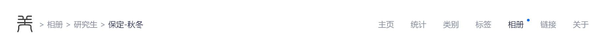
function categoriesBreadcrumb()
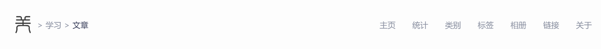
hexo-tag-aplayer 与 hexo-blog-encrypt 冲突
这似乎是个通病，无论什么主题都有这种问题。
在使用 Aplayer 的推文前面加上标记：
从 APlayer: APlayer 是一个简约且漂亮的 HTML5 音乐播放器，支持多种模式，包括播放列表模式、吸底模式 (gitee.com) 搞到 APlayer.min.css 和 APlayer.min.js 放到对应目录下。
修改 header.ejs：
1 2 3 4 <% if(page.APlayer) { %>
source/_config.yml 下设置参数避免重复调用（hexo-tag-aplayer/docs/README-zh_cn.md at master · MoePlayer/hexo-tag-aplayer (github.com) ）
1 2 aplayer: asset_inject: false
OK 了，我想 hexo-tag-map 插件也是同理，不过这个插件我不太喜欢，也很久没用了，还是不设置了。
Giscus 评论系统
将评论系统改成：giscus
tabs
使用方法：
1 2 3 4 5 6 7 8 9 10 11 12 13 14 15 16 17 18 19 20 21 {% tabs Unique name, [index] %} Will be used in #id's as prefix for each tab with their index numbers. If there are whitespaces in name, for generate #id all whitespaces will replaced by dashes. Only for current url of post/page must be unique! [index] : Index number of active tab. If not specified, first tab (1) will be selected. If index is -1, no tab will be selected. It's will be something like spoiler. Optional parameter. [Tab caption] : Caption of current tab. If not caption specified, unique name with tab index suffix will be used as caption of tab. If not caption specified, but specified icon, caption will empty. Optional parameter. [@icon] : FontAwesome icon name (full-name, look like 'fas fa-font') Can be specified with or without space; e.g. 'Tab caption @icon' similar to 'Tab caption@icon'. Optional parameter.
hide
搬运自 butterfly：Butterfly 安裝文檔(三) 主題配置-1 | Butterfly
2.2.0 以上提供
請注意，tag-hide 內的標簽外掛 content 內都不建議有 h1 - h6 等標題。因為 Toc 會把隱藏內容標題也顯示出來，而且當滾動屏幕時，如果隱藏內容沒有顯示出來，會導致 Toc 的滾動出現異常。
inline
inline 在文本里面添加按鈕隱藏內容，只限文字
( content 不能包含英文逗號，可用 ‚)
1 2 3 哪個英文字母最酷？{% hideInline 因為西裝褲(C 裝酷),查看答案,#FF7242,#fff %}
哪個英文字母最酷？查看答案
因為西裝褲(C 裝酷)
門裏站着一個人? Click
閃
Block
block 獨立的 block 隱藏內容，可以隱藏很多內容，包括圖片，代碼塊等等
( display 不能包含英文逗號，可用 ‚)
1 2 3 4 查看答案
查看答案
Toggle
如果你需要展示的內容太多，可以把它隱藏在收縮框裏，需要時再把它展開。
( display 不能包含英文逗號，可用‚)
1 2 3 4 5 6 7 8 9 10 {% hideToggle Butterfly 安裝方法 %}
Butterfly 安裝方法 CSS 与 LESS
一些浏览器似乎不支持 CSS 文件使用的一些语法，换成 LESS 就可行！
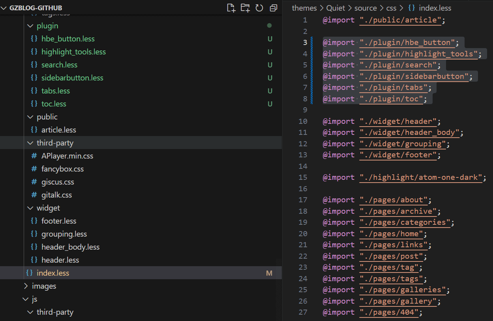
Inject
介绍
搬运自：Butterfly 安裝文檔(四) 主題配置-2 | Butterfly
如想添加额外的 js/css/meta 等等东西，可以在 Inject 里添加，支持添加到head（</body> 标签之前）和 bottom（</html> 标签之前）。
请注意：以标准的 html 格式添加内容
1 2 3 4 5 inject: head: - <link rel="stylesheet" href="/self.css"> bottom: - <script src="xxxx"></script>
这样还绕开了一些 JS 被加密插件搞崩的问题，真是太棒了！
实现
post_head.ejs 里添加：
1 2 3 4 5 6 7 <% if(page.inject) { %>
footer.ejs 里添加：
1 2 3 4 5 6 7 <% if(page.inject) { %>
折叠目录 2024/11/11
现在目录终于可以像 butterfly 等主题一样折叠了！如果不想要折叠目录，需要在文章标头设置：
其它
还有一些 css 的调整没有放上去，按着自己的审美随便调了下。
得益于自己的兴趣和 ChatGPT 强大的能力，让我即使没有系统地学过前端知识也能够编写许多代码，确实是个深坑啊！
原主题还有一点编译错误，找机会修一修。
最好把各种颜色都用变量存起来，不然太屎山了。
想起了当时实习的时候看同事写的屎山代码，我已经尽力把代码写的比较规范了……